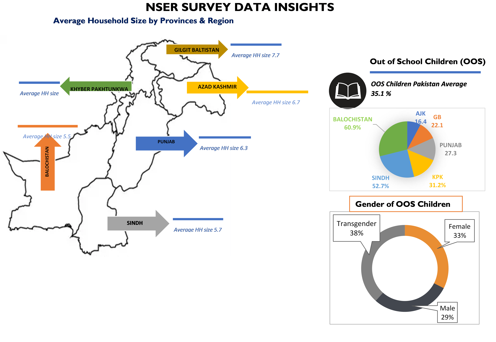

4 Targeting and Enrollment Mechanism
4.1 Identification through Parliamentarians
At the beginning of the Benazir Income Support Programme (BISP) in July 2008, there was a lack of reliable data available for identifying the underprivileged and vulnerable population in the country. To address this challenge, the task of identifying potential beneficiaries was assigned to the Parliamentarians, which was referred to as Phase-I of targeting. Under Phase-I, application forms were distributed equally among the Parliamentarians. Each member of the National Assembly and Senate received 8,000 forms, while each member of the Provincial Assemblies received 1,000 forms, regardless of their party affiliation. This distribution ensured a fair and balanced representation of beneficiaries across different political constituencies. The distributed application forms were then collected and subjected to a verification process using the National Database & Registration Authority (NADRA) database. NADRA’s database provided essential information and allowed for the verification of the details provided in the application forms. Out of the total 4.2 million application forms received, 2.2 million families were identified as eligible for cash transfers based on the verification process. These families met the criteria and were considered underprivileged or vulnerable, qualifying them for the assistance provided by BISP. This initial approach relied on the involvement of Parliamentarians to identify potential beneficiaries. While it provided an opportunity to reach a large number of households, it also had limitations due to its reliance on the availability and participation of Parliamentarians. Additionally, the identification process was subjective to some extent, as it depended on the Parliamentarians’ understanding of the needs and conditions of their respective constituencies. Over time, BISP recognized the importance of incorporating more objective and data-driven methods for beneficiary selection. This led to the development and implementation of the Poverty Scorecard questionnaire and the refined biometric verification system (BVS) to improve the targeting process and ensure greater transparency, objectivity, and accuracy in identifying underprivileged individuals.
4.2 Poverty Scorecard Survey 2010-11
To avoid the shortcomings of an unscientific approach and to introduce objectivity and transparency in the selection process, the Benazir Income Support Programme (BISP) implemented a mechanism called the Poverty Scorecard (PSC) questionnaire. This approach was developed by a technical committee in 2009. The Poverty Scorecard questionnaire was designed based on the concept of Proxy Means Testing (PMT), which utilizes proxy variables to determine the poverty status of households. Proxy variables are indicators that are correlated with poverty and can be used to estimate a household’s socio-economic conditions. During the National Rollout in 2010-11, the PSC questionnaire was employed to identify and select the deprived and poorest families. This process involved conducting Paper and Pencil Personal Interviewing (PAPI) with the households. The PSC questionnaire was administered to collect relevant information and assess the socio-economic status of each household. Partner firms were engaged to assist in the implementation of the National Rollout. These firms worked together to cover a significant number of households, with approximately 27 million households surveyed. This coverage accounted for approximately 85% of the national population. By utilizing the Poverty Scorecard questionnaire and conducting extensive household surveys, BISP aimed to ensure a more objective and data-driven approach in identifying and selecting underprivileged individuals. This methodology helped to address the shortcomings of previous selection processes and bring greater fairness, transparency, and accuracy to the identification of beneficiaries.
The implementation of the Poverty Scorecard questionnaire and the National Rollout marked a significant step forward in targeting assistance to those who are truly in need. By using scientific methods and reliable data, BISP sought to provide support to the most deprived and economically vulnerable segments of the population, fostering inclusive social welfare and poverty alleviation.
The enumeration statistics of the 2010-11 National Rollout provide insights into the scale and scope of the process. The statistics includes information such as the number of households surveyed, the geographic distribution of the coverage.
| Province | No. of Districts | HHs Covered (in millions) | Estimated Population (in millions) | Population Covered (in millions) | Population Covered (in millions) |
|---|---|---|---|---|---|
| Punjab | 39 | 14.9 | 96.4 | 81.2 | 86.3 |
| Sindh | 27 | 6.6 | 38.9 | 34.3 | 88.1 |
| KPK | 24 | 3.6 | 26.9 | 21.3 | 79.1 |
| Baluchistan | 30 | 1.1 | 7.6 | 6.1 | 79.4 |
| AJ&K | 10 | 0.6 | 3.9 | 3.5 | 88.5 |
| GB | 7 | 0.2 | 1.3 | 1.1 | 89.4 |
| FATA | 7 | 0.4 | 3.7 | 3.1 | 83.0 |
| Total | 144 | 27.4 | 177.9 | 150.6 | 84.6 |
4.3 National Socio-Economic Registry (NSER) Update
Socio-economic registries used for identifying the underprivileged population often encounter errors at both the design and implementation levels. These errors can arise from various factors, such as incomplete or inaccurate data collection, inadequate assessment criteria, or deficiencies in data management processes. Another crucial aspect to consider is the frequency at which these registries are updated.
Conventionally, socio-economic registries are updated every 3 to 5 years. However, the existing database of the Benazir Income Support Programme (BISP) required recertification and regular updates to ensure its effectiveness in targeting underprivileged individuals. The BISP database, which was established during the 2010-11 national roll-out, had not been updated since resulting in a static database with no follow-up surveys or updates.
To address this issue, in July 2015, the BISP Board approved the update of the 2010-11 database, leading to the development of the National Socio-Economic Registry (NSER) in principle. The NSER aimed to transform the existing database into an active socio-economic registry that would be regularly updated to improve targeting accuracy.
The update of the NSER was planned to be carried out in two phases: Phase-I, which served as a pilot phase, and Phase-II, which encompassed the national roll-out. The update process employed the Computer Assisted Personal Interviewing (CAPI) technique. CAPI involved using electronic devices i.e. tablets to conduct interviews with individuals or households, enabling efficient data collection and management.
The Phase-I pilot phase allowed for testing and refining the update process in a limited area or sample, ensuring that any issues or challenges were addressed before the full-scale national roll-out in Phase-II. This phased approach facilitated a more systematic and controlled implementation of the update process, reducing the potential for errors or disruptions.
By updating the database through the NSER initiative, BISP aimed to create a more reliable and accurate socio-economic registry. Regular updates would enable the identification and inclusion of new beneficiaries who might have previously been excluded or overlooked. Additionally, the NSER update would help address any changes in the socio-economic conditions of households over time, ensuring that assistance was provided to those who genuinely required support.
The implementation of the NSER update process through CAPI technology demonstrated BISP’s commitment to improving the targeting mechanism and enhancing the accuracy of beneficiary selection. By embracing more sophisticated and efficient data collection methods, BISP aimed to better serve the underprivileged population and ensure that resources were directed towards those who needed them the most.
4.4 PMT and Enhancement in Assessment Indicators for NSER
It also became inevitable to update the basis of poverty scorecard i.e. PMT along with the updating exercise of BISP’s database. This was necessary as with the passage of time, changes took place in numerous household indicators. The originally devised PMT formula, that forms the basis of ‘Households’ Poverty Score’, developed in 2009, included 23 indicators that fall under the following three broad categories:
Household and individual characteristics
Ownership of durable goods and housing characteristics
Ownership of productive assets, especially land holding, livestock and farm equipment
Using Household Integrated Economic Survey (HIES), the PMT formula was updated and enhanced with improved and new proxy indicators and their weights. The latest PMT formula includes 43 proxy indicators and address following objectives / concerns:
Under representativeness of urban poor: In previous formula, urban poor were under-represented. The new formula has addressed this issue.
Geographic Diversity: Revising the PMT formula allowed taking into account the location effects in order to bring the regional coverage of the programme closer to the current distribution of poverty across regions.
Expansion in Proxy Indicators: The updated PMT formula includes an expanded set of variables compared to the earlier version.
Improved weights of proxy indicators w.r.t. time and socio-economic conditions of households: It is highly likely that the ‘weights’ of the proxy indicators have changed over time. HIES 2013/14 provided an opportunity to update both the indicators and their weights in PSC, for a better targeting of the programme.
Coherence & Consistency with National Surveys: BISP is a very comprehensive and National social safety net program and it is now possible for departments both at federal and provincial levels to use one single database for implementing their programmes and interventions. The database is also available to private sector under BISP’s Data Sharing Protocols. Along with this, NSER is consistent with multiple national surveys as the variables included in PSC corroborates/corresponds to HIES, Pakistan Social and Living Standard Measurement Survey (PSLM) and Census.
4.5 NSER Pilot Phase
To ensure effective targeting of the underprivileged population, the Benazir Income Support Programme (BISP) adopted a comprehensive mechanism that involved updating the National Socio-Economic Registry (NSER) through a combination of self-registration desks and door-to-door surveys. The process began with a pilot phase in 2017, during which 17 districts were selected for the NSER update.
The selection of districts for the pilot phase was carefully planned, taking into account the heterogeneities and diverse characteristics of the country. Factors such as remote areas, poverty rates, population density, and other relevant indicators were considered in order to achieve optimal results. This strategic stratification aimed to capture a representative sample of the underprivileged population across different regions. However, in the case of Mirpur and Gilgit districts, the NSER survey could not be initiated due to the non-issuance of a ‘No Objection Certificate (NOC)’ to the Partner Organizations (POs) by security agencies. In light of this situation, the BISP management made the decision to shift these districts to the NSER national roll-out phase.
The NSER national roll-out encompassed a broader implementation across the country, ensuring that the update process was not hindered by administrative or security challenges in specific districts. By including Mirpur and Gilgit in the national roll-out, BISP aimed to ensure comprehensive coverage and consistency in updating the NSER database. The update process involved a combination of self-registration desks and door-to-door surveys. Self-registration desks provided individuals and households with the opportunity to voluntarily register themselves as potential beneficiaries. The door-to-door surveys involved BISP representatives visiting households to collect data and verify the socio-economic conditions of the residents.
Through this mechanism, BISP aimed to gather accurate and up-to-date information on the underprivileged population. By incorporating both self-registration and door-to-door surveys, the program sought to capture a wide range of individuals and households, ensuring inclusivity and minimizing the chances of exclusion.
The selection process for the pilot phase and the subsequent shift to the national roll-out phase demonstrated BISP’s flexibility and adaptability in response to challenges encountered during implementation. The commitment to updating the NSER through comprehensive surveys and self-registration reflected BISP’s dedication to refining the targeting mechanism and ensuring that resources were effectively directed to those who truly required assistance.
By expanding the NSER update process to cover a larger population, BISP aimed to create a robust and reliable database that accurately represented the socio-economic conditions of the underprivileged population. This data-driven approach facilitated the fair and efficient allocation of resources, contributing to the goal of poverty reduction and inclusive social welfare.
4.6 NSER National Rollout
National Roll-out of NSER was started in January 2019. BISP divided 140 remaining districts, across country, into 8 clusters. During 2019 BISP’s NSER Wing updated NSER operations’ manual and acquired an approval from BISP Board. This manual serves as a guideline for all internal and external operations including door-to-door survey through POs. NSER procured the services of survey firms to execute door-to-door CAPI survey in these 140 remaining districts. After a technical and financial competitive bidding, three Partner Organizations i.e. Aurat Foundation (AF), Sustainable Development Policy Institute (SDPI), and Rural Support Programmes Network (RSPN) were allotted Cluster 1 & 5, Cluster 2 & 3, and Cluster 4, 6, 7 & 8 respectively. RSPN however, could not obtain ‘No Objection Certificate (NOC)’, for CAPI data collection, from concerned departments to execute this survey for cluster 4 & 8. Similarly NOC was not awarded for AJK and paper-based data collection NOC was revoked for Districts of Narowal and Sialkot in Cluster-1 for Aurat Foundation due to -security reasons. HERE the transition from Partner Firms to BISP taking lead in the field and providing TOTs to school staff itself is missing. The entire coordination and training mechanism and how it was rolled out the survey in KPK, GB and newly merged areas is not explained. It is pertinent to mention that door-to-door (D2D) survey with this scale requires a large number of human resources to be trained in order for them to understand the intricacies of operations involved. NSER Wing trained more than 700 master trainers including resources from partner organisations as well as BISP’s field staff. These master trainers, through cascade trainings, further trained data collection staff including supervisors, listers and enumerators. In order to expedite data collection, a massive public information campaign was also launched before the commencement of data collection in each cluster. Electronic and print media were used in this regard. During social mobilization through POs, NSER Wing distributed 25 million leaflets, whereas 2.5 million posters and 28,000 banners were also displayed in all 140 districts. Through an online dashboard, NSER monitored the quality of data collection and used Census 2017 data to analyse and perform consistency checks for data collected in field. NSER team also conducted extensive field monitoring and collectively 432 person days were spent for field monitoring of ongoing data collection activities.
During the same year, NSER Team has also met two major Disbursement Linked Indicators (DLIs) for DFID and World Bank. The first DLI is ‘Enhanced capacity of the NSER Unit and data accessibility’ for DFID and the latter being ‘At least 10% of BISP beneficiary households have updated PSC information in the NSER’ for World Bank.
4.7 NSER - Dynamic Registry
In October 2019, BISP’s Board approved the scheme of establishment of NSER as a Dynamic Registry for registration of missed-out households, data update & enrolment of new beneficiaries. This initiative was highly inevitable to answer the following two questions:
What is the mechanism to cater a change in socio-economic status of households?
What is the mechanism to include households with a grievance that they were not included in previous rollout(s)? During national roll-out January 2019, several factors contributed to a low coverage of 36%. These include non-issuance of NOCs for partner organizations (Especially in AJK, GB and Erstwhile-FATA), households’ refusals retention rates for data collection staff. To overcome these challenges and to achieve nationwide carpet coverage, as a first step towards Dynamic Registry, NSER resorted to NSER National Rollout Phase-1 approach where self-registration was done through data collection desks. Phase-I of a desk-based data collection was launched in 15 districts of the Pilot Phase in collaboration with NADRA as was approved in 34th BISP board’s meeting minutes. These desks are established in centers called ’Ehsaas Registration Centers (ERCs)’and will be extended to rest of the country in next phases . Initially, these centers will be operated for at least 120 days and later shifted to BISP Tehsil offices for ultimate adoption of Dynamic Approach for National Socio-Economic Registry throughout the country. For cluster 4 and 8 where NOCs were not awarded, a census model was proposed. In this regard, services of provincial government Punjab will be hired for Geographic Information System (GIS) mapping of tehsils, blocks and enumeration areas. Services of teacher will be hired through concerned provincial governments and education departments and these teachers will act as enumerators for a complete sweeping of enumeration areas. Each teacher will be assigned one or two enumeration areas for collection of data. Data collection will be done using state of the art hardened/secured tablets. A Project Management Unit (PMU) will be established in National Socio-Economic Registry (NSER) wing to carry out external Monitoring & Evaluation (M&E). Internal monitoring of door to door data collection exercise will be carried out by provincial governments through their officers supervised by BISP PMU. PBS will also be taken on board for technical Human Resource (HR) to assist BISP’s NSER Wing in technical matters as PBS has experience of carrying out data collection through teachers for the national censuses. It is also planned that in light of recommendations of the security agencies, data will be collected through hardened tablets with all security features provided by the security agencies.
Data Collection Progress (THESE ARE OLD FIGURES of JULY 2020, however in our report we should ideally include updated figures) The total number of estimated households of the country was 33.3 million whereas 13.95 million households have been surveyed/covered by the end of this reporting period . This brings the overall percentage coverage at 42%. The following table represents data collection progress achieved in the NSER update by June 21, 2020.
4.8 Data Sharing
BISP data/NSER is used for provision of BISP benefits, including but not limited to, cash transfers, conditional and unconditional, to eligible beneficiaries. Additionally, BISP data is used by many other social development programs/initiatives launched by various provincial and federal governments, donors, INGOs, NGOs and research organizations. This data sharing serves objective(s) as mentioned above where all departments (more than 200 social safety programmes) from public sector, under the umbrella of Ehsaas Programme, as well as other private organization can benefit from this dynamic registry. Most recently, the Prime Minister’s Ehsaas Kifalat Programme has used the BISP’s data, for financial and digital inclusion of women through the ‘One Woman One Bank Account’ policy. There is a well-defined Data Sharing Protocol approved by BISP Board which allows data sharing with concerned stakeholders including Federal and Provincial Government Institutions, Research Organizations, NGOs/INGOs, etc. to use data for the social safety net targeting poor and vulnerable persons. As per above referred protocol, a Data Sharing Committee (DSC) has been constituted to assess the data request submitted by the requesting organisation(s). The purpose of data request is minutely discussed in DSC meeting and only the most relevant data is shared after signing of data confidentiality agreement by the concerned organization. So far more than 100 organizations/researches have benefitted from BISP’s data till date. Some of the key users of the data are listed as below:
Prime Minster Health Insurance Programme (PMNHIP)
Prime Minister’s Interest Free Loan (PMIFL) schemes
Various programmes of Punjab Social Protection Authority
Social Protection Unit, Social Welfare Department, Government of Sindh
Pakistan Poverty Alleviation Fund (PPAF)
Pakistan Education Foundation (PEF)
Southern Punjab Poverty Alleviation Project (SPPAP)
Pakistan Bait-ul-Mal (PBM) for child support programme and orphans
ACTED Pakistan
